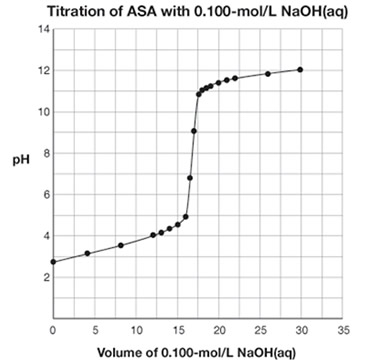

Purpose:
A manufacturer of ASA tablets claims that each pill contains 325 mg of acetylsalicylic acid (ASA). You will analyze data from a titration experiment that will determine the mass of ASA in the tablets.
Procedure:
Read “Investigation 8.6: Titration Analysis of ASA” on page 345 of your textbook. Use the sample data obtained by a student to calculate the average mass of ASA in the tablets.
Observations:


Answer questions 4 and 5 in the Module 7 Lesson 3 Assignment.

© Mike Rogal/shutterstock
Acetylsalicylic acid (ASA) has many other effects on the human body in addition to the ability to relieve pain. As a result, ASA is often prescribed by doctors to treat patients with a variety of ailments. What are some of the other uses for ASA? Are there risks in prescribing the use of ASA for so many people?
Search the Internet to identify risks associated with ASA. Which risks are of concern to children, young adults, and older adults? How might these risks influence your choice of medication?
Save a copy of the list of risks associated with ASA to your course folder. Include comments on how these risks might influence your use of ASA in the future.